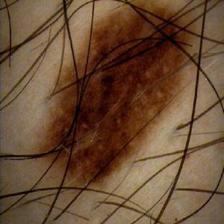

Transfer learning
Skin Lesion Classification
Comparing deep learning approaches to classifying benign and malignant skin lesion images.


The same lesion before and after hair removal during preprocessing.
Approach
Image Preprocessing, Transfer Learning, Data Augmentation, ROC Analysis
The project applied image preprocessing, trained EfficientNet and ResNet18 models, and evaluated classification performance with ROC analysis and threshold tuning.
View the repository